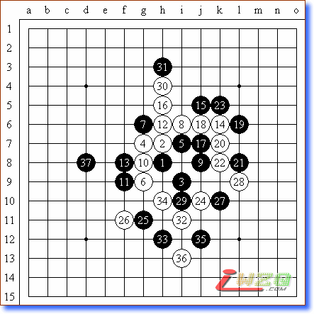

谈棋、学棋、长棋
#1 谈棋、学棋、长棋 作者：有志青年 发表时间：2007-8-29 16:28:54
原文地址：http://www.shwzq.com/qiwen/ShowArticle.asp?ArticleID=1631
昨天晚上，是我第一次请老戈（戈翀宇）来我家谈棋。其实真实的意义并不是谈棋，而是希望能够通过谈棋，使我达到学棋的目的。
毕竟已经很久没有下棋了，很多东西都十分的生疏，基本已经没有认识的定式了。更荣幸的是，昨天，章志强六段也携夫人来我家做客。他夫人腹部已经明显地隆起，意味着我们的章六段也马上就快成为人父了。
我们首先看了黄宇峰和曹冬的对局。经过老戈的讲解，给我们的感觉，这是双方都犯错的一局，错进又错出。相对来说，曹冬在信心和经验上更胜一筹，黄宇峰在机会面前没有太好的把握，估计这将是小黄十分懊悔的一局棋。从棋局中我认为，黄宇峰或许在棋力上已经接近了一流棋手的水平，但在机会把握和经验上还需要更多的积累，和一流棋手还有一张纸的距离，需要在大型比赛中去逐步捅破。
随后老戈向我们讲述了他的自战过程。其实在战前他已经有准备斜月的变化，给曹冬开局也是希望能够交换并有执黑先行的便利，希望可以得到有先行攻击的利益。
在讨论中，我们主要对有两步棋的变化产生了异义，其一是第29手，我的感觉是黑第29手被白第32手封盖后的味道感觉不是很好，我建议黑棋在第29手直接走在第33手的位置，这样的棋型比较舒展，但昨天的讨论结果是我说服不了老戈，也请各位高手在此多多指点。其二，对于黑37手我也有想法，总感觉下得稍早了一些，是否可以再在别处做些准备？黑棋在此时通盘的攻击点很多，是否可以先下在某些左右互相借用的点，然后在下黑37呢？我的感觉是黑37手有点局部，有点早，似乎还需要有一些准备。但限于棋力，我昨天没有能够找到更好的方式，只好在此向各位高手求教了。

昨天的最后是我和老戈的一盘对弈，我开了松月。老戈给了我一个奇怪的弱防。在一百多手后，我以五次悔棋的代价取得了胜利。我家没有记譜的软件，所以没有办法把此棋譜告诉大家。
本周四，老戈还将给我更多的指教，希望在周四我可以下得更好。